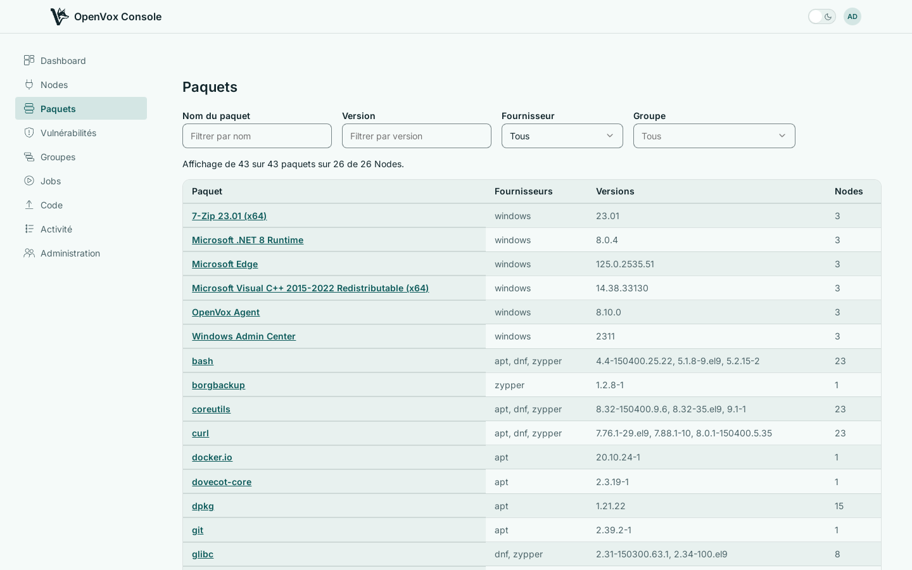
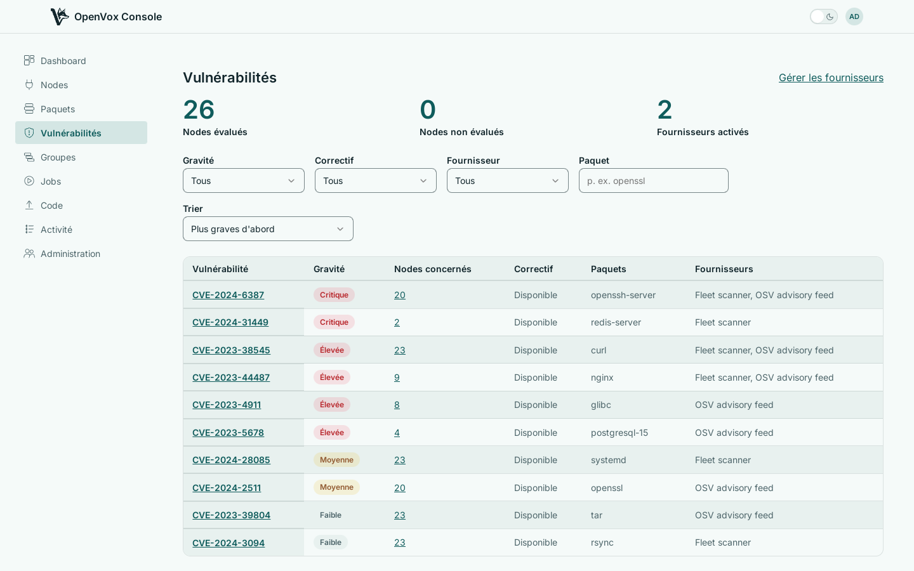

Chaque paquet du parc et les avis de sécurité publiés qui le concernent — confrontés à ce que vos Nodes rapportent réellement, et non à ce qu'ils étaient censés avoir.
Répondez à « qui a encore l'ancienne version »
Cherchez par paquet, version ou fournisseur et voyez quels Nodes portent quoi, sans vous connecter à aucun. La collecte s'active Node par Node et la console peut l'activer à distance : vous n'êtes donc pas obligé de collecter partout pour en disposer quelque part.

Des constats fusionnés entre sources
Pointez la console vers les sources d'avis auxquelles vous vous fiez. Les constats fusionnent par vulnérabilité, la gravité la plus élevée l'emporte, et la page nomme chaque source qui la signale — deux sources en désaccord, c'est donc quelque chose que vous voyez, et non quelque chose qui se règle dans votre dos.
Chaque constat porte la version installée, la version corrigée lorsqu'elle existe, et le fait même qu'un correctif existe ou non. Ce dernier point sépare le travail que vous pouvez planifier de celui que vous ne pouvez pas.

Un Node sans inventaire de paquets ne peut pas être évalué, et la console le dit plutôt que de le compter comme sain. « Rien de connu contre lui » et « jamais examiné » sont deux réponses différentes et s'affichent différemment.
OpenVox Console est livrée sous forme de deux images de conteneur, compilées pour amd64 et arm64 à chaque push. SETUP.md détaille un déploiement réel — openvoxserver, openvoxdb, Postgres et la console — avec les instructions pour conteneur comme pour paquet.